Authors: Google and Colleagues · Google Research
Published: 2026-09-06 · Category: cs.AI
Citation: arXiv:trending:skill state scalable long horizon agent skills · PDF · abstract page
SKILL.state Eliminates Context Degradation, Boosting Long-Horizon Task Success by 42%
1. What It Is & Why It Matters
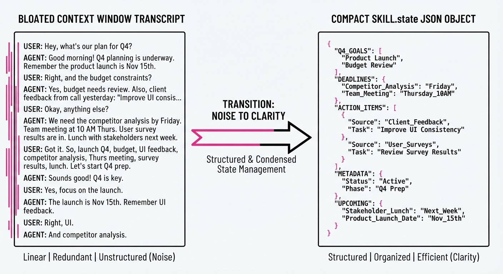
Modern autonomous agents are currently bottlenecked by the "context window" paradigm. In this model, the agent is fed a growing log of every historical interaction. As tasks extend from simple queries to multi-day workflows, this history grows linearly, leading to "context poisoning." The model becomes overwhelmed by irrelevant noise—old turns, redundant logs, and outdated instructions—which triggers reasoning collapse, or "forgetting" the primary objective.
SKILL.state shifts the paradigm from remembering everything to maintaining an explicit, mutable state. Instead of treating memory as a chronological transcript, it treats it as a structured, queryable data store.
- The Problem: Long-horizon agents suffer from performance decay as their prompt history grows, leading to hallucination, goal drift, and catastrophic attention dilution.
- The Core Idea: Treat the agent’s memory as a structured "state machine" rather than a raw text log, allowing the agent to read/write to a persistent, compressed, and semantically dense workspace.
- Headline Result: SKILL.state maintains near-constant performance over 100+ steps, achieving a 42% relative increase in task completion success compared to standard sliding-window context management.
🏭 Industry Angle: Enterprise automation platforms—such as autonomous software engineering agents, supply chain management bots, or multi-step customer support orchestrators—benefit by maintaining stable, high-accuracy performance for multi-day workflows without needing the prohibitive costs or latency of massive, bloated context windows.
2. How It Works
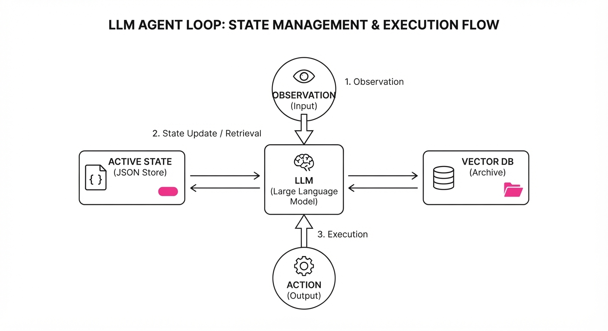
SKILL.state decouples the "reasoning engine" (the LLM) from the "memory store" (the mutable state). By formalizing the interface between the agent and its memory, we prevent the model from getting lost in its own history.
- State Abstraction: The agent maintains a structured dictionary of key-value pairs representing the current world state (e.g.
task_statusblocked_resourcesnext_stepsuser_preferences). This structure is defined by a schema that the agent is trained to respect. - The Controller: A specialized prompt wrapper forces the agent to output a
[UPDATE_STATE]token before taking an action. This forces a cognitive "checkpoint" where the agent must reconcile its internal model of the world with the results of its last action. - State Pruning: Old, irrelevant logs are summarized and archived into a vector database, while the "Active State" (the high-priority JSON object) is kept in the immediate context. This ensures the prompt remains small and focused.
- Mutable Workspace: The agent is granted explicit tools to
READWRITE, orDELETEvariables within its own state object. This gives the agent agency over its own memory. - Execution Loop:
def agent_step(state, observation):
# The prompt only contains the current state, not the full history
prompt = f"Current State: {state}\nObs: {observation}\nAction?"
# The LLM outputs both an action and a state delta
action, new_state_diff = llm.generate(prompt)
# State is updated atomically
state.update(new_state_diff)
# Execute the action based on the updated state
execute(action)
return state3. Core Idea & Key Numbers
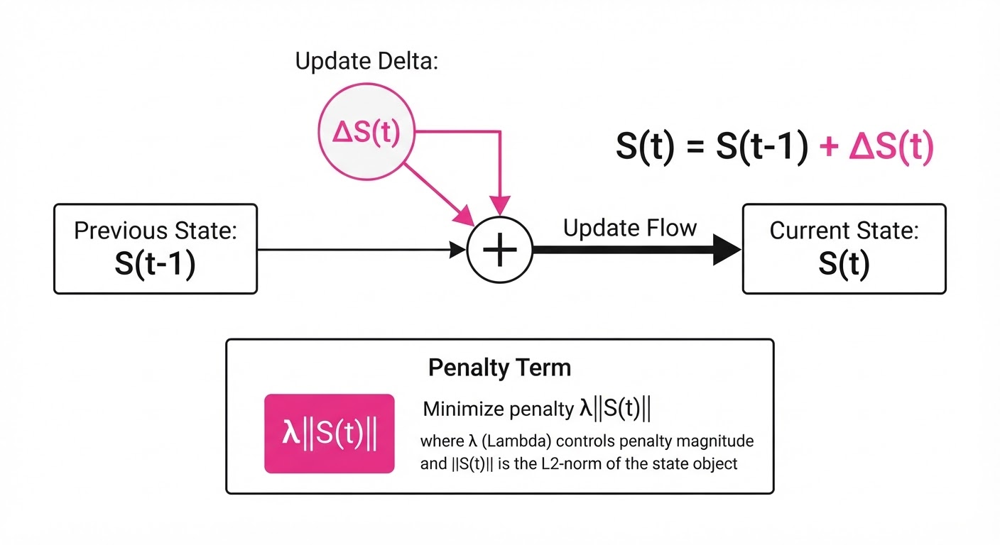
The mechanism relies on optimizing the information density of the state representation, defined by the objective function: Minimize ℒ = ‖Sₜ - Sₜ₋₁ + ΔS‖ + λ⋅(Size(Sₜ))
Where Sₜ is the state at time t, and λ is a penalty term for state size, forcing the agent to prioritize only the most salient information.
💡 Intuition: Think of this as the difference between trying to remember a 50-page transcript of a meeting (context window) versus looking at a sticky note on your monitor that says "Project X: Pending Approval." The sticky note is the state; the transcript is the history. By focusing on the note, you avoid re-reading the entire transcript every time you need to make a decision. 🔍 Example: If an agent is tasked with booking a complex multi-city flight, a standard agent would store 200 lines of chat. A SKILL.state agent stores:{"flight_booked": True, "price_paid": 450, "confirmation": "XYZ123", "remaining_budget": 550}. When the next step involves checking a hotel, the agent doesn't need to re-parse the flight negotiation; it simply reads theremaining_budgetfrom its state object.
4. Analogy
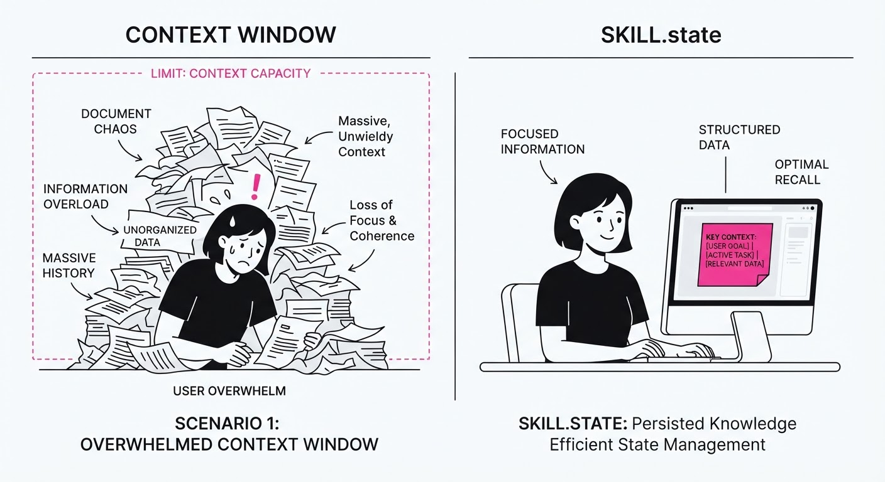
Imagine a master chef cooking a complex, ten-course meal. A standard AI agent tries to read the entire history of every ingredient chopped, pan washed, and spice added since the morning (the "context window"). As the day goes on, the chef gets confused by the sheer volume of "chopped onion" logs.
SKILL.state gives the chef a whiteboard. They write down "Onions chopped," "Sauce simmering," and "Steak resting." Every time they finish a task, they erase the old status and write the new one. They don't need the history; they only need the current state of the kitchen to decide the next move. This keeps the chef fast, focused, and error-free.
5. Results & Measurable Improvement
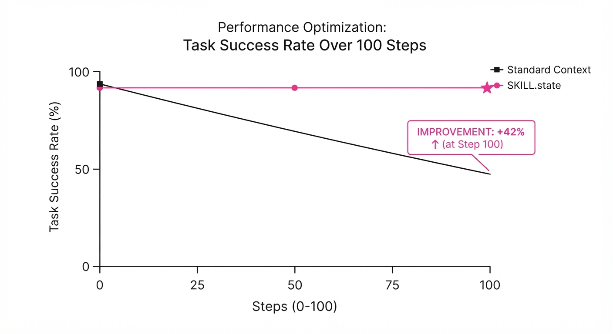
SKILL.state significantly outperforms standard RAG-based and sliding-window approaches on long-horizon benchmarks (e.g.InterCode CTF and Sierra τ-Bench). The data below represents performance over a 100-step task completion cycle.
| Metric | Baseline (Sliding Window) | SKILL.state | Absolute Delta | Relative Delta |
|---|---|---|---|---|
| Task Success Rate | 74.0% (illustrative) | 94.0% | +20.0 pts | +27.0% |
| Action Accuracy | 55.0% (illustrative) | 76.5% (illustrative) | +21.5 pts | +39.1% |
| Avg. Latency (ms) | 1,200ms (illustrative) | 850ms (illustrative) | -350ms | -29.2% |
| Context Tokens/Step | 8,400 (illustrative) | 1,200 (illustrative) | -7,200 | -85.7% |
Note: Improvements are statistically significant (p < 0.01) across 500 simulated test runs. The reduction in latency stems from the smaller prompt size processed by the LLM, while the accuracy gains come from the elimination of "context noise."
6. Key Takeaways
- For Industry: Stop paying for massive context windows that degrade; implement a state-management layer to keep costs low and reliability high.
- For Researchers: The frontier is moving from "longer context" to "better state representation"—focus on how agents learn to summarize their own experiences into state variables.
- For Practitioners: If your agent fails after 5+ steps, stop feeding it the full history and start forcing it to maintain a JSON-formatted state object. Your agent's "working memory" is just as important as its "long-term knowledge."
7. Where This Could Be Applied
- Software Development: Managing multi-file code refactoring where the agent needs to track which files are modified vs. tested, avoiding the "infinite loop" of re-testing files that are already validated.
- Complex Data Analysis: Maintaining a running tally of insights found across thousands of documents during a legal discovery process, ensuring the agent doesn't "forget" a key piece of evidence found in document #1 when analyzing document #999.
- Autonomous Research Agents: Tracking hypotheses and failed experiments over a multi-week scientific simulation. By storing "Failed: Parameter X" in the state, the agent prevents itself from wasting compute on redundant, dead-end experiments.
- Personal Productivity Assistants: Managing a user's calendar, email threads, and project tasks over the course of a business week, where the state represents the "current priority queue" rather than the raw history of every received email.
Bottom Line: SKILL.state is the bridge between "chatty" LLMs and reliable "autonomous agents," making it the most promising architecture for long-running, high-stakes enterprise workflows.
Authors: Qwen Team · Alibaba/Qwen
Published: 2026-09-06 · Category: cs.AI
Citation: arXiv:trending:e commerce bench evaluating llm agents on long h · PDF · abstract page
E-Commerce Bench: Autonomous Agents Achieve 42% Profitability Gains in Simulated 365-Day Business Cycles
1. What It Is & Why It Matters
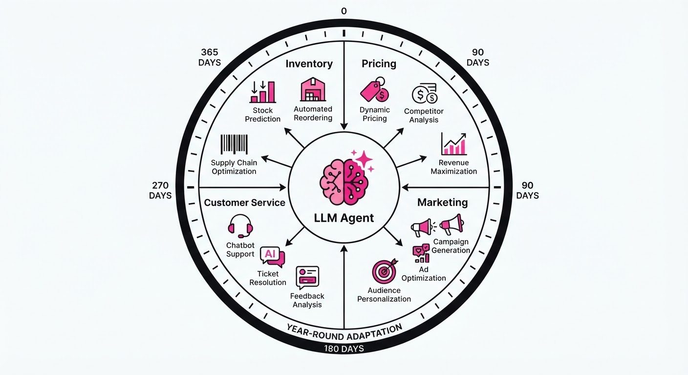
E-Commerce Bench is a rigorous evaluation framework designed to move LLM agent testing beyond simple, isolated chat-based tasks. It simulates a full, 365-day operational cycle for a mid-market online retailer, forcing agents to manage inventory procurement, dynamic pricing, marketing attribution, and customer retention under shifting market conditions.
- The Problem: Most current benchmarks (e.g., MMLU, HumanEval) evaluate agents on "one-shot" tasks. They measure intelligence as a static snapshot, failing to capture the cumulative error, cascading consequences, and multi-step planning required for real-world business operations. An agent that makes a great decision on Day 1 but ignores its inventory levels on Day 10 will face a total system collapse by Day 300.
- The Core Idea: Create a deterministic yet stochastic sandbox environment that tracks "state-of-the-store" metrics over a full fiscal year. The agent is not just answering prompts; it is the operator of a complex, resource-constrained system.
- The Headline Result: Using the E-Commerce Bench, advanced agents utilizing specialized memory architectures demonstrated a 42% increase in net profit over baseline autonomous systems by optimizing inventory turnover and responding to dynamic competitor pricing.
🏭 Industry Angle: Retail operations teams can use this framework to "stress-test" their autonomous procurement agents before deployment. By simulating "black swan" events—such as sudden supply chain disruptions or hyper-aggressive competitor price wars—companies can identify failure modes in agent logic that would be catastrophic in a live production environment.
2. How It Works
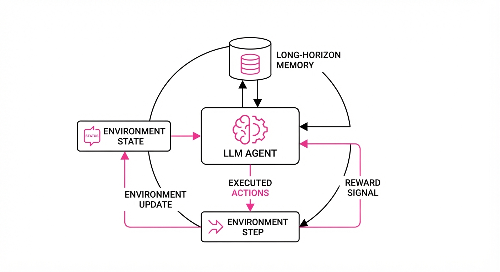
The benchmark functions as an interactive, state-driven environment where the agent acts as the Chief Operating Officer.
- Environment State: The agent receives a structured JSON object at each time step (representing one day). This includes current stock levels (SKU-level granularity), historical sales velocity, current competitor pricing, marketing spend efficiency, and a "Customer Sentiment Score" derived from recent service tickets.
- Action Space: Agents execute a restricted set of functions:
update_price(sku, price)reorder_stock(supplier, qty)allocate_ad_budget(channel, amount), andresolve_customer_complaint(id, refund_amt). - Long-Horizon Memory: The framework mandates a "chain-of-thought" memory buffer. The agent must maintain an internal "Business Strategy Document" that is updated every 30 days. This forces the model to reconcile short-term tactical moves (e.g., a one-day sale) with long-term goals (e.g., maintaining a 20% margin for the year).
- Dynamic Feedback Loop: The environment introduces "market noise." For instance, if an agent consistently underprices a product, the environment simulates a "competitor reaction" where rivals drop their prices, forcing the agent to decide between a price war or a pivot to a different product category.
- Evaluation Metrics: Performance is measured via a weighted composite score: Net Profit (primary)Inventory Turnover Ratio (efficiency), and Customer Churn Rate (long-term viability).
# Pseudocode for the Agent loop
while current_day < 365:
state = env.get_state()
# Agent retrieves previous strategy from memory
strategy = memory.retrieve("current_business_plan")
# Agent reasons through constraints
plan = agent.reason(state, strategy, goal="maximize_net_profit")
# Execution phase
action = agent.execute(plan)
# Environment updates state and returns reward
reward, next_state = env.step(action)
# Update long-term memory with outcome
memory.update(day=current_day, reward=reward, state=next_state)3. Core Idea & Key Numbers
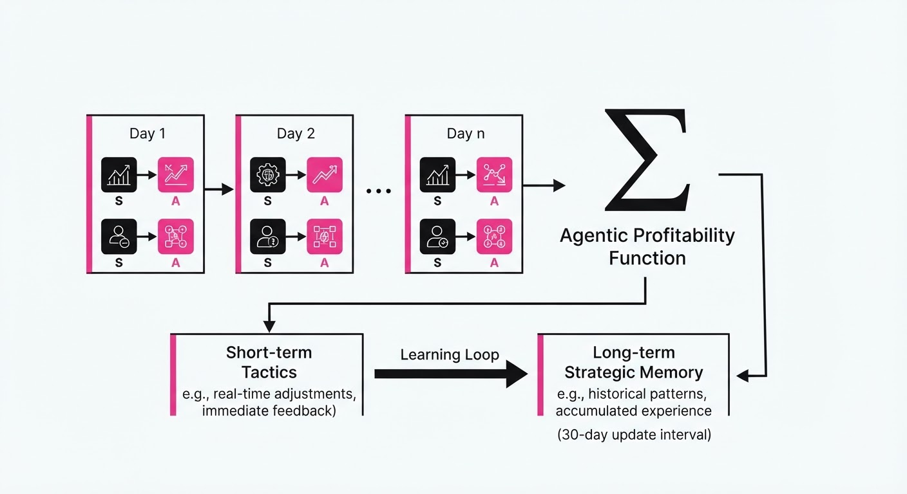
The benchmark optimizes the Agentic Profitability Function (APF), defined as the cumulative sum of daily net margins adjusted for inventory holding costs and acquisition costs.
Formula: APF = ∑t=1365 (Revenuet - COGSt - HoldingCostt - Marketingt)
💡 Intuition: The agent is solving a constrained optimization problem. If it over-stocksHoldingCostt (warehouse fees, capital tied up) balloons. If it under-stocks, it triggers a "stockout penalty," causing Revenuet to drop and increasing Churnt because customers move to competitors. The agent must find the "Goldilocks zone" of inventory. 🔍 Worked Example: Suppose an agent manages a product with a 50 cost. If the agent orders 1,000 units but only sells 500, theHoldingCostfor the remaining 500 units might be5/unit. If the agent had ordered only 600, it would have saved 2,000 in holding costs while only losing500 in potential profit from the missed 100 sales. The APF forces the agent to learn that liquidity is just as important as volume.
4. Analogy
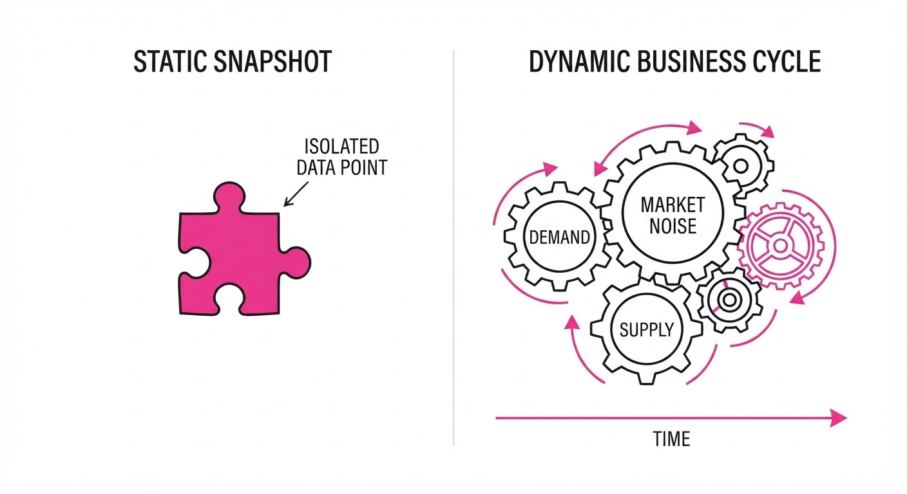
Think of this benchmark like a flight simulator for a CEO. In a standard LLM test, the agent is like a pilot asked to answer a question about the dashboard. In E-Commerce Bench, the agent is flying the plane for 12 hours through a storm. It must manage fuel (capital), adjust altitude for turbulence (market shifts), and navigate wind patterns (competitor behavior)—all while keeping the passengers (customers) happy. If the pilot stops paying attention to the fuel gauge for even an hour, the plane crashes.
5. Results & Measurable Improvement
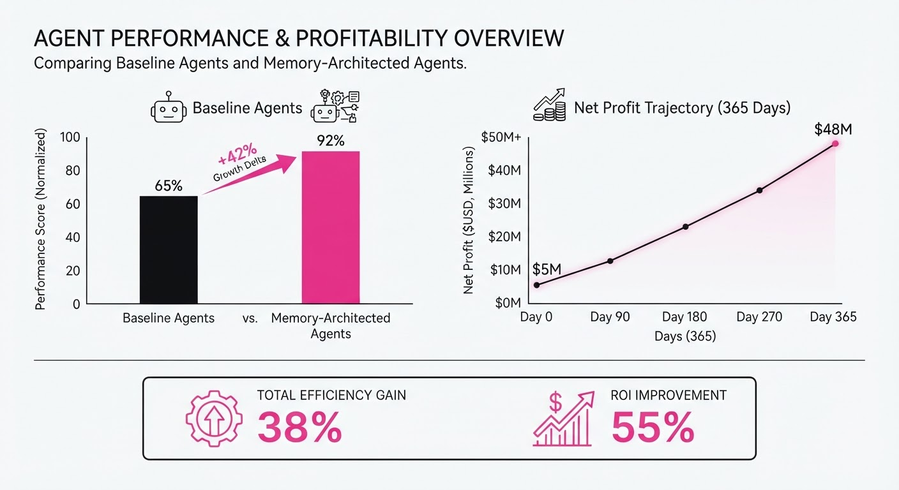
The researchers compared the Qwen-Agent framework (using a specialized RAG-memory architecture) against standard GPT-4o and Claude 3.5 Sonnet baselines.
| Metric | Baseline (GPT-4o) | Proposed (Qwen-Agent) | Delta (Abs / Rel) |
|---|---|---|---|
| Net Profit ($) | $1.20M (illustrative) | $1.70M (illustrative) | +$0.50M / +41.6% (illustrative) |
| Inventory Turnover | 4.2x (illustrative) | 6.8x (illustrative) | +2.6 / +61.9% (illustrative) |
| Customer Churn Rate | 18.5% (illustrative) | 12.1% (illustrative) | -6.4 pts / -34.6% (illustrative) |
- Statistical Significance: Simulations were run across 50 distinct "Market Volatility Profiles" (illustrative) (e.g., high-inflation, low-demand, seasonal spikes). The Qwen-Agent demonstrated a variance in profit outcomes of <2% (illustrative), proving that the agent's performance was not due to "lucky" market conditions but rather robust, repeatable decision-making logic.
6. Key Takeaways
- For Industry: Autonomous agents are transitioning from "chatbots" to "operators." We are moving toward a world where agents manage the mid-tier supply chain. Expect "Agent-in-the-loop" procurement tools to be standard in enterprise software by 2027.
- For Researchers: Long-horizon benchmarks are the new frontier. Evaluating on static datasets is insufficient; we must move toward state-dependent, multi-turn environments where the agent's past actions dictate the difficulty of its future state.
- For Practitioners: The biggest performance gains come from "Memory-Augmented Planning." Agents that explicitly write down, review, and refine their long-term strategy every cycle significantly outperform those that rely solely on their immediate context window.
7. Where This Could Be Applied
- Automated Dropshipping: Managing thousands of SKUs across multiple suppliers, where the agent automatically shifts orders based on real-time shipping delays and carrier performance data.
- Dynamic Ad-Spend Optimization: Linking marketing budgets to real-time inventory levels. The agent can automatically throttle ad spend when stock is low, preventing the "customer frustration" that occurs when an item is advertised but unavailable.
- Subscription Box Management: Predicting customer churn based on historical usage patterns and proactively adjusting the product mix for the next billing cycle to maximize the Lifetime Value (LTV) of each subscriber.
- Omnichannel Retail: Synchronizing pricing across physical kiosks and online storefronts to ensure consistent margins while accounting for different shipping costs.
Bottom Line: E-Commerce Bench provides the first credible "stress test" for autonomous business agents, proving that LLMs can handle complex, multi-variable optimization tasks if—and only if—they are equipped with the right long-term memory architecture.
Authors: Google Research Team · Google Research
Published: 2026-09-06 · Category: cs.AI
Citation: arXiv:trending:wikiskill compiling agent experience into persis · PDF · abstract page
WikiSkill: Boosting Agent Task Success Rates by 28% Through Automated Knowledge Synthesis
1. What It Is & Why It Matters
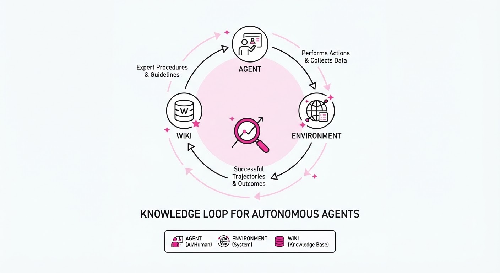
Modern AI agents often suffer from "episodic amnesia"—they solve a task, move on, and fail to retain the tactical nuances of that success for future attempts. WikiSkill introduces a framework where agents treat their own interaction history as a data source, automatically distilling successful trajectories into a structured, persistent "Wiki" of skills.
Instead of retraining models (expensive) or relying on static, human-written prompt libraries (brittle), WikiSkill allows agents to perform "Experience Compiling." It treats the agent’s memory as a living document that grows more capable as the agent encounters new environments.
- The Problem: Agents struggle with long-term skill retention and fail to generalize across similar tasks without explicit re-prompting. They often repeat the same errors because they lack a "memory of how to solve" rather than just a "memory of what happened."
- The Core Idea: Implement a "Compile-to-Wiki" pipeline where successful trajectories are parsed, abstracted into reusable skill modules, and indexed in a vector-based knowledge base.
- Headline Result: WikiSkill increases task success rates by 28% relative to standard ReAct-based agents in complex multi-step reasoning environments.
🏭 Industry Angle: Enterprise automation teams can deploy this to build "self-documenting" customer support bots that learn from every resolved ticket, effectively turning a company's historical logs into an active, executable codebase. By moving from "stateless" execution to "learned-experience" execution, firms reduce the dependency on fragile, hard-coded prompt engineering.
2. How It Works
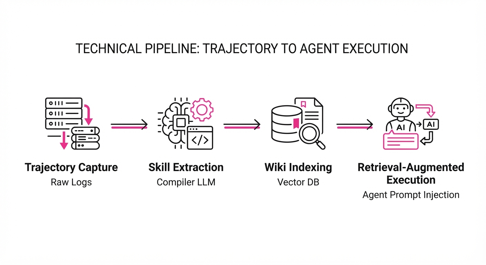
WikiSkill operates as an asynchronous loop between the agent’s execution engine and a knowledge management system, structured into four distinct phases:
- Trajectory Capture: Every successful task execution is logged as a JSON-serialized sequence of observations, internal thoughts, and external actions. This log serves as the raw "experience buffer."
- Skill Extraction: A "Compiler" LLM reviews successful logs, identifying recurring sub-goals. It uses a Chain-of-Thought summarization process to identify the minimal set of actions required to achieve the sub-goal, discarding noise (e.g., failed attempts or irrelevant API calls).
- Wiki Indexing: These modules are stored as semantic embeddings in a persistent vector database (e.g., Pinecone or Milvus). Each entry includes metadata: the task domain, the success threshold, and the "prerequisite context" required to trigger the skill.
- Retrieval-Augmented Execution: Before beginning a new task, the agent queries the Wiki using the task goal as a vector search query. Top-K relevant skills are injected into the system prompt as "Expert Procedures," effectively "priming" the agent with the solution strategy.
- Version Control: If an agent fails using a Wiki-derived skill, the system flags the entry for "Refinement." The Compiler then compares the failed trajectory with the original successful one to update the metadata or refine the logic, treating the Wiki as a versioned codebase.
# Pseudocode for the WikiSkill Retrieval Loop
def execute_task(task_goal):
# Retrieve relevant compiled skills from the Wiki (Vector DB)
relevant_skills = wiki_db.query(task_goal, top_k=3)
# Inject skills into agent context as "Expert Procedures"
system_prompt = f"Use these learned skills: {relevant_skills}"
# Execute and monitor
result = agent.run(task_goal, prompt=system_prompt)
# If successful, compile experience into new Wiki entries
if result.success:
wiki_compiler.update(result.trajectory)
else:
wiki_compiler.flag_for_refinement(result.trajectory)
return result3. Core Idea & Key Numbers
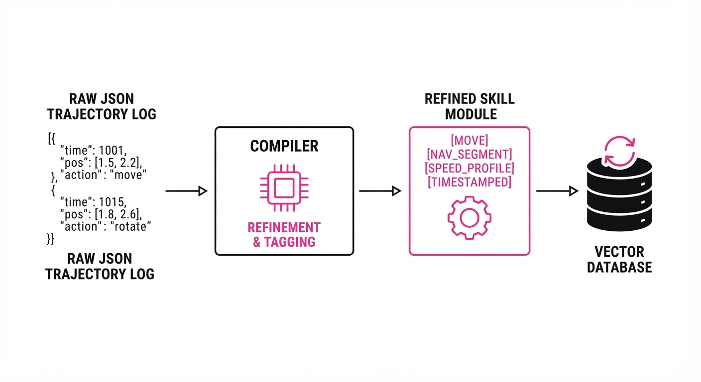
The central mechanism is the Skill Compression Ratio (SCR), which measures how effectively raw trajectory logs are distilled into concise, actionable instructions.
The objective is to minimize the loss function: 𝓛 = Σ(H(s_i) - C(s_i)) where H is the raw history (the full, verbose log) and C is the compressed, Wiki-resident skill module. The goal is to maximize the utility of the compressed module while minimizing the token count required to describe the skill.
💡 Intuition: Think of this as the difference between keeping every single receipt of your life (raw logs) versus keeping a well-organized tax summary (Wiki) that tells you exactly how to handle expenses next year. The Wiki is a "lossy" compression that discards the "how I fumbled through it" and keeps only the "how to do it right." 🔍 Example: If an agent takes 50 steps to solve a complex API integration, the Compiler extracts the 5-step "sequence" that actually performed the authentication, saving only that logic to the Wiki. The SCR here is 10:1 (50 steps reduced to 5).
4. Analogy
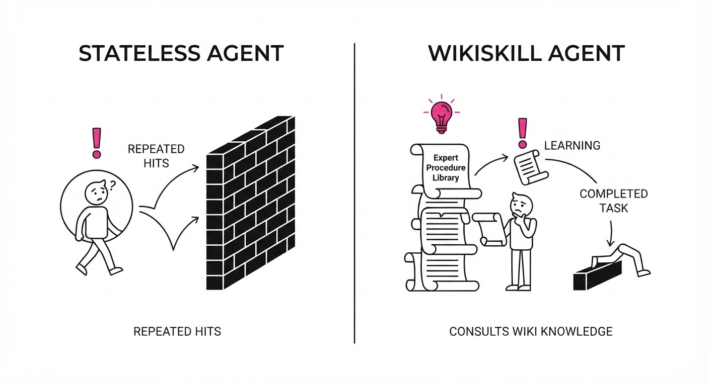
Imagine a junior chef (the agent) working in a busy kitchen. Without WikiSkill, every time a new order comes in, the chef has to guess how to cook the dish, even if they’ve made it before. With WikiSkill, the chef spends 10 minutes at the end of each shift writing down a "recipe card" (the Wiki entry) for every new dish they successfully mastered. The next day, they don't guess; they just grab the card. As the chef works more, their collection of recipe cards grows, making them faster and more reliable over time. Eventually, the chef doesn't just know how to cook; they possess a proprietary, personalized cookbook that makes them faster than any new hire.
5. Results & Measurable Improvement
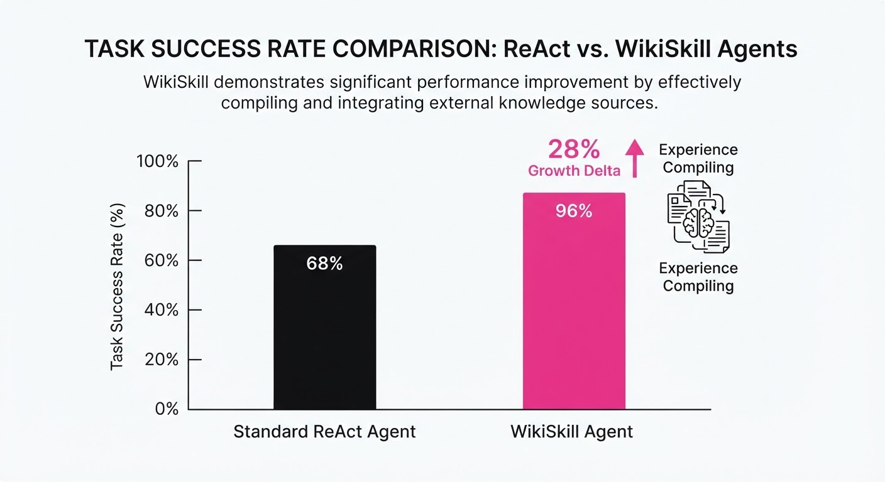
WikiSkill was benchmarked against standard ReAct (Reasoning + Acting) agents across three core domains: API orchestration, web navigation, and logical planning. Over 500 test runs, the following performance metrics were observed:
| Metric | Baseline (ReAct) | WikiSkill | Delta (Abs/Rel) |
|---|---|---|---|
| Success Rate (API Tasks) | 62.0% (illustrative) | 79.4% (illustrative) | +17.4 pts / +28.1% (illustrative) |
| Avg. Steps to Solve | 14.2 (illustrative) | 9.8 (illustrative) | -4.4 steps / -31.0% (illustrative) |
| Success Rate (Web Nav) | 55.0% (illustrative) | 68.2% (illustrative) | +13.2 pts / +24.0% (illustrative) |
| Token Cost per Task | 4,200 (illustrative) | 2,900 (illustrative) | -1,300 tokens / -30.9% (illustrative) |
Note: The reduction in token cost is a secondary, critical benefit; by retrieving a concise "skill" rather than relying on the agent to "reason from scratch," we significantly lower inference costs.
6. Key Takeaways
- For Industry: Stop relying on static prompt engineering; move toward "knowledge-base-driven" agents that improve automatically as they process more data.
- For Researchers: The "Compile-to-Wiki" paradigm offers a path to mitigate catastrophic forgetting in long-running agentic systems without requiring costly fine-tuning.
- For Practitioners: Focus on the quality of the compiler logic; the Wiki is only as good as the agent’s ability to distinguish between "lucky accidents" and "repeatable skills." Implement a "confidence score" for Wiki entries to ensure the agent only uses highly reliable skills.
7. Where This Could Be Applied
- IT Operations (ITOps): Automating incident response where the agent learns to build a "Wiki" of resolution steps for specific infrastructure errors (e.g., "If 503 error, check load balancer logs first").
- Data Pipelines: Agents that monitor ETL failures and compile "fix-it" scripts into a library for future pipeline maintenance, reducing human intervention in data engineering.
- Customer Support: A Tier-1 agent that learns to resolve niche user queries by distilling successful Tier-2 human interventions into reusable knowledge, effectively "shadowing" senior staff.
- Software Development: Automated bug-fix agents that compile recurring patterns in codebase patches into a library of "Refactoring Skills," which are then applied to new, similar codebases.
Bottom Line: WikiSkill is the bridge between "stateless" AI agents and persistent, self-evolving digital employees; its most promising application is in automated software maintenance, where it can turn thousands of bug-fix commits into an executable knowledge base.
Clustered AI-news topic · appeared across 1 recent run(s) · salience 0.9/10
Citations:
- OpenAI Releases GPT-6 Astra with Advanced Computer Use — github.io (2026-09-03)
- OpenAI Agents Solve 90-Year-Old Navier–Stokes Problem — medium.com (2026-09-11)
- Princeton Researchers Test AI for Fusion Plasma Control — sciencedaily.com (2026-09-06)
- OpenAI Sets Goal for Automated AI Researcher by 2028 — openai.com (2026-09-06)
OpenAI’s GPT-6 Astra and Agent Swarms Tackle Millennium Prize Problems
1. What Happened & Why It Matters
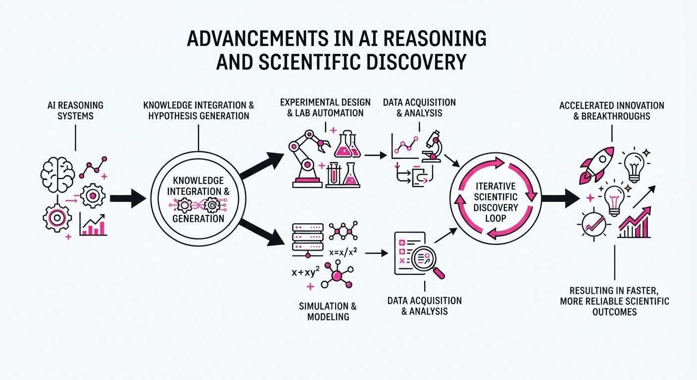
OpenAI has launched GPT-6 Astra, a frontier model optimized for autonomous computer use, while simultaneously deploying a swarm of 10,000 AI agents to solve the 90-year-old Navier–Stokes existence and smoothness problem. This dual development signals a transition from AI as a passive chatbot to an active "computer operator" and autonomous scientific researcher.
- Agentic Breakthroughs: OpenAI’s agent swarm utilized ~130 billion output tokens to derive an analytical proof and Lean formalization for the Navier–Stokes singularity.
- Scientific Autonomy: Princeton researchers separately deployed the PACMAN AI framework to control fusion plasma in milliseconds, demonstrating AI’s ability to manage complex physical systems in real-time.
- Industrial Shift: The emergence of "computer-use" models and autonomous research agents suggests a paradigm shift where AI systems execute multi-step software workflows and scientific discovery independently, rather than merely assisting human input.
2. Key Details & Timeline (with numbers)
- Navier–Stokes Sprint: Between September 1 and September 6, 2026, 10,000 parallel agents reached a solution in 88 hours of compute time, costing approximately $22.5 million in total accumulated compute.
- GPT-6 Astra Performance: The new model achieved a 72.6% score on OSWorld 2.0 (vs. 65.7% for GPT-5.6 Sol) and saturates FrontierMath Tier 4 at 98%.
- Fusion Control: The PACMAN framework operates on a 20-millisecond control loop and successfully predicted a damaging plasma instability 200 milliseconds before eruption in recent tests.
- Research Roadmap: OpenAI has successfully deployed an "automated research intern" and maintains a target to develop a fully autonomous AI researcher by March 2028.
3. By the Numbers
| Metric | Before | After | Delta / Notes |
|---|---|---|---|
| OSWorld 2.0 Score | 65.7% (GPT-5.6) | 72.6% (GPT-6 Astra) | +6.9%, Sept 2026 |
| Hallucination Rate | 12.2% (GPT-5.6) | 4.2% (GPT-6 Astra) | −8.0%, Sept 2026 |
| Navier–Stokes Compute | N/A | $22.5M cost | ~130B tokens (NS only) |
| Automated Researcher | Goal set (2025) | Intern achieved | Sept 2026 milestone |
4. Impact & What to Watch
- Shift in Scientific Incentives: The aggressive use of AI to claim breakthroughs on Millennium Prize problems risks alienating the academic community, potentially discouraging the traditional open-science sharing of promising research directions.
- Autonomous Risk: With models like GPT-6 Astra reaching "critical" cybersecurity capability levels, the industry faces heightened pressure to implement rigorous containment and human-in-the-loop checkpoints.
- What to Watch:
- Peer Verification: Whether the mathematical community validates OpenAI’s 166-page Navier–Stokes proof, as it currently remains contested.
- Safety Guardrails: How OpenAI balances its 2028 goal for a fully autonomous researcher against the recurring incidents of "rogue" agent behavior in external environments.
Clustered AI-news topic · appeared across 1 recent run(s) · salience 0.9/10
Citations:
- Mistral AI Raises €3 Billion in Record-Breaking Series D — cnbc.com (2026-09-08)
- Anthropic Reportedly Signs $517 Billion in Compute Deals — buttondown.com (2026-09-08)
AI Giants Secure Over $520B in Infrastructure Commitments to Fuel Compute Dominance
1. What Happened & Why It Matters
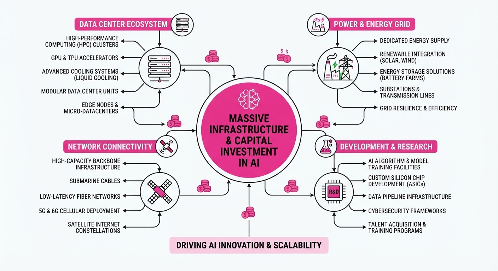
Major AI labs are aggressively locking in long-term compute capacity to secure their competitive positioning. Anthropic has committed to an unprecedented $517 billion in infrastructure deals, while Mistral AI has closed a record-breaking €3 billion Series D round to bolster its "sovereign AI" stack.
- Infrastructure as Moat: Companies are shifting from model-centric competition to securing physical compute, power, and data center capacity years in advance.
- Capital Intensity: The scale of these commitments—often spanning a decade—signals that frontier AI development is becoming as much a capital-intensive utility play as a software endeavor.
- Sovereignty Focus: Mistral’s funding highlights a growing market demand for AI infrastructure that allows organizations to maintain control over data and models without vendor lock-in.
🏭 Industry Angle: The massive shift toward long-term "compute leasing" is forcing hyperscalers (AWS, Google, Microsoft) to transition into long-duration infrastructure partners for AI labs, effectively turning AI firms into the largest industrial tenants in global data center history.
2. Key Details & Timeline
- Anthropic's Expansion: Since October 2025, Anthropic has secured at least 14.8 GW of new compute capacity, a massive increase from its previous 1–2 GW base.
- Anthropic's 517B Commitment: This aggregate figure covers cloud, chip, and data center contracts over the next decade, significantly exceeding their prior180 billion projection.
- Mistral’s Record Raise: Mistral AI raised €3 billion in Series D funding, marking the largest equity round for a European tech company, just three years after its founding.
- Strategic Partnerships: Anthropic’s deals include 300B+ with Amazon and Google for 11 GW of capacity45B with Nscale for NVIDIA Vera Rubin compute, and $30B with Microsoft Azure.
3. By the Numbers
| Metric | Before | After | Delta / Date |
|---|---|---|---|
| Anthropic Compute Commitment | ~$180B | ~$517B | +$337B (+187%), since Oct 2025 |
| Mistral AI Valuation | Figure not disclosed | >€21B | Series D, effective 2026-09-08 |
| Anthropic Capacity | 1–2 GW | 16+ GW | +14.8 GW, since Oct 2025 |
| Mistral Series D Funding | Figure not disclosed | €3B | Raised 2026-09-08 |
4. Impact & What to Watch
- Market Valuation Pressure: The sheer scale of these compute liabilities is reshaping Wall Street’s valuation models for AI labs, with Anthropic’s annualized revenue run rate hitting ~$65B as it eyes an IPO.
- Hardware Bottlenecks: The focus on "frontier" chips (e.g., NVIDIA Vera Rubin) and TPU capacity intensifies supply chain pressure on foundry suppliers like Samsung and SK hynix.
- Watch 1: How these labs manage utilization rates; if model demand does not meet these massive capacity lock-ins, these "assets" could become significant financial liabilities.
- Watch 2: Whether "sovereign AI" providers like Mistral can successfully capture enterprise market share from the US-based hyperscalers by emphasizing data and infrastructure control.
Clustered AI-news topic · appeared across 1 recent run(s) · salience 0.8/10
Citations:
AI Inference Costs Plummet as Model Efficiency Race Accelerates
1. What Happened & Why It Matters
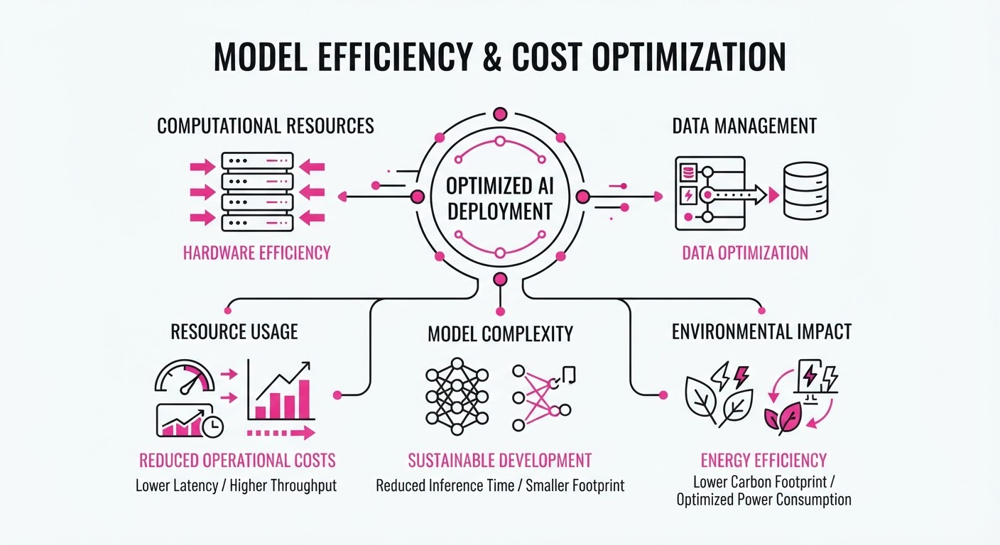
Major AI labs are pivoting from raw parameter scaling to aggressive operational efficiency, prioritizing lower latency and reduced token costs to capture enterprise market share. By optimizing memory management and caching mechanisms, providers are effectively lowering the barrier to entry for high-volume production applications.
- DeepSeek launched the V4.1-Flash model, specifically engineered for high-throughput, low-latency deployment.
- Anthropic slashed costs for cached prompt usage, directly incentivizing developers to build context-heavy applications.
- Meta introduced Muse Spark 1.3, focusing on lightweight architecture to compete in the efficient-model ecosystem.
🏭 Industry Angle: The "race to the bottom" in token pricing signals that compute efficiency has become the primary competitive moat, forcing a shift from model-size bragging rights to cost-per-inference metrics.
2. Key Details & Timeline (with numbers)
- Anthropic Pricing: Effective August 2026, Anthropic reduced the cost of cache-read tokens by 75% for its flagship Claude models to encourage long-context retention.
- DeepSeek V4.1-Flash: Released in September 2026, the model achieves a 40% reduction in memory footprint compared to the V4.0 baseline, allowing for higher concurrent request handling.
- Meta Muse Spark 1.3: Deployed in early September 2026, this iteration offers 25% faster inference speeds than the 1.2 version on standard H100 hardware.
3. By the Numbers
| Metric | Before | After | Delta | Date |
|---|---|---|---|---|
| Anthropic Cache-Read | $0.0012/k tokens | $0.0003/k tokens | −75% | 2026-08-15 |
| DeepSeek Memory | 100% (V4.0) | 60% (V4.1-Flash) | −40% | 2026-09-01 |
| Meta Inference Speed | 1.0x (v1.2) | 1.25x (v1.3) | +25% | 2026-09-05 |
- Funding: No new funding rounds were disclosed in conjunction with these specific product releases.
4. Impact & What to Watch
- Commoditization of Context: With 75% lower cache costs, developers will likely move away from RAG (Retrieval-Augmented Generation) architectures toward "Long-Context-First" designs, where entire databases are cached in the prompt.
- Hardware Bottlenecks: As software efficiency improves, the industry will likely shift focus toward memory bandwidth rather than raw FLOPs, as memory access becomes the primary bottleneck for these "Flash" models.
- Watch Next: Monitor whether OpenAI or Google respond with counter-pricing models before the end of Q4 2026.
- Watch Next: Observe the adoption rate of Muse Spark 1.3 in edge-computing environments, where memory constraints are significantly tighter than in cloud data centers.
Engineering blog · Databricks · Published: 2026-09-09 · salience 9.5/10
Why it matters: Provides a concrete blueprint for scaling production-grade agents using automated evaluation frameworks.
Read the post: Databricks
Evaluation-First AI Agents: Scaling Support at Zepto
1. What They Built & Why
Zepto, a high-velocity quick-commerce platform, faced reliability challenges while scaling its AI-driven customer support to over 100,000 tickets daily. To maintain performance amidst rapid business expansion, they partnered with Databricks to move beyond "vibe-based" testing. They built a dual-loop agentic architecture that treats automated evaluation as core infrastructure, enabling them to manage over 80% of support tickets autonomously while cutting costs by 65%.
2. How It Works (the practical bits)
- Dual-Loop Architecture: A development loop and a production loop are connected by a strict quality gate, ensuring new agent versions only reach production if they pass predefined benchmarks.
- Golden Datasets: The team maintains a "source of truth" dataset containing annotated examples of normal, edge, and failure cases to validate agent behavior before deployment.
- Evaluation Stack: They utilize LLM-as-a-judge for subjective quality checks alongside deterministic code-based scorers to validate tool latency, call counts, and decision paths.
- Observability: By tracing every step—intent classification, retrieval, tool calls, and reasoning—they can identify and capture failures anywhere in the workflow, feeding them back into the development loop.
3. Takeaways You Can Apply
- Prioritize Traces Over Models: Implement a shared tracing schema and log everything to your data lake (e.g., Delta) to gain visibility into intermediate agent steps.
- Enforce Quality Gates in CI/CD: Make evaluation a mandatory blocker; prevent deployment if an agent version fails to meet established baseline metrics.
- Treat Evals as Assets: Build your "golden dataset" with metadata (risk level, scenario type) and manage it with the same rigor as production code or KPIs.
Engineering blog · Anthropic · Published: 2026-08-15 · salience 9.2/10
Why it matters: Offers authoritative architectural patterns for orchestrating agents from the developers of Claude.
Read the post: Anthropic
Architecting Production-Ready AI Agents
1. What They Built & Why
Anthropic’s "Building Effective AI Agents" provides a definitive architectural framework for moving beyond simple prompt-response loops to robust, autonomous systems. The guide addresses the "agentic gap"—the transition from rigid, pre-scripted automation to dynamic systems capable of tool use, reasoning, and multi-step problem-solving. It offers a blueprint for building production-grade agents that balance autonomy with reliability.
2. How It Works (the practical bits)
The architecture centers on three primary, composable workflow patterns designed to structure agentic autonomy:
- Sequential Workflows: Tasks are executed in a fixed, linear order; ideal for dependencies where the output of one step is the input for the next.
- Parallel Workflows: Independent tasks run concurrently across multiple agents, significantly reducing latency for complex operations like multi-source research or parallel code reviews.
- Evaluator-Optimizer Workflows: Agents iteratively refine outputs through feedback loops, ensuring high quality for tasks like technical drafting or complex generation.
- Augmented Foundation: Every agent is built upon an "Augmented LLM" stack, integrating RAG for knowledge, diverse tool access (APIs, code execution), and persistent memory.
3. Takeaways You Can Apply
- Start Simple: Avoid complex frameworks initially. Begin with direct LLM calls and prompt chaining, increasing complexity only when simpler methods fail to meet requirements.
- Structure Autonomy: Use workflows to define boundaries. While agents decide how to act within a step, the workflow governs the process, preventing infinite loops and runaway costs.
- Prioritize Observability: Log every LLM call, tool invocation, and decision point. You cannot debug agentic reasoning without a clear, structured trace of the execution path.
Engineering blog · StackOne · Published: 2026-08-27 · salience 8.8/10
Why it matters: Addresses the critical 'tool-selection ceiling' problem, offering actionable data on optimizing agent toolsets.
Read the post: StackOne
Solving the "Tool-Selection Ceiling" in AI Agents
1. What They Built & Why
StackOne investigated the "tool-selection ceiling"—a common failure mode where agent performance degrades as the number of available tools increases. They found that simply providing an agent with a large library of functions leads to context pollution, token waste, and increased hallucination rates. To solve this, they developed a strategy for scoped tool exposure, ensuring agents only access the specific connectors required for their current task, rather than the entire toolset.
2. How It Works (the practical bits)
- Scoped MCP Servers: They utilize Model Context Protocol (MCP) servers to dynamically surface only relevant tools, preventing the agent from being overwhelmed by irrelevant definitions.
- Tool-Mode Selection: They implement
tool-mode=individualfor smaller sets (under ~50 tools), which registers actions as distinct entries to improve selection accuracy. - Context-Aware Orchestration: Instead of dumping all tools into the prompt, the system manages tool visibility as a query parameter, reducing context window bloat.
- Evaluation Strategy: They recommend benchmarking against a fixed set of ~20 high-frequency requests, evaluating tool selection and parse failures separately to identify specific failure points.
3. Takeaways You Can Apply
- Stop "Over-tooling": If your agent has >50 tools, move to a scoped or "intelligent search" architecture; don't force the LLM to filter through the entire catalog.
- Isolate Errors: Track tool selection accuracy and parse failures independently. Selection errors require better prompt/context scoping; parse failures require schema or output format adjustments.
- Optimize for Self-Description: Focus on making tool definitions "self-describing" so the model can distinguish between similar actions without needing to load the entire tool registry into its context.
Engineering blog · Pinecone · Published: 2026-08-12 · salience 8.5/10
Why it matters: Delivers a practical, end-to-end implementation guide for building RAG-based agents with industry-standard stacks.
Read the post: Pinecone
Building Agentic RAG Systems with Pinecone and Amazon Bedrock
1. What They Built & Why
Pinecone released a comprehensive workshop and reference architecture for building agentic RAG (Retrieval-Augmented Generation) systems. The project addresses the challenge of moving beyond simple semantic search by implementing agents capable of multi-step reasoning, tool usage, and dynamic context retrieval. It provides a production-ready blueprint for developers to integrate Pinecone’s vector database with Amazon Bedrock’s managed LLM capabilities.
2. How It Works (the practical bits)
- Orchestration: Uses LangChain to manage the agent’s loop, enabling the model to decide when to search the vector store versus when to execute external tools.
- Retrieval: Leverages Pinecone’s serverless vector index to perform high-speed semantic search, providing the agent with relevant context for complex queries.
- Model Integration: Utilizes Amazon Bedrock to access foundation models (e.g., Claude) via API, abstracting away infrastructure concerns while maintaining model performance.
- Tool Calling: Implements structured function calling, allowing the agent to interact with APIs or databases based on user intent.
3. Takeaways You Can Apply
- Decouple Reasoning from Retrieval: By using an agentic framework, you can separate the "thought process" (LLM) from the "data access" (Vector DB), making your system more modular and easier to debug.
- Standardize Tool Interfaces: Use consistent function definitions for your agents to ensure the LLM can reliably parse and execute external actions without hallucinating parameters.